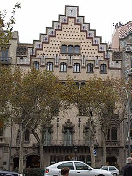
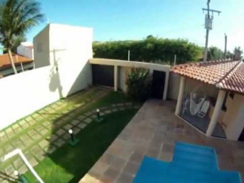
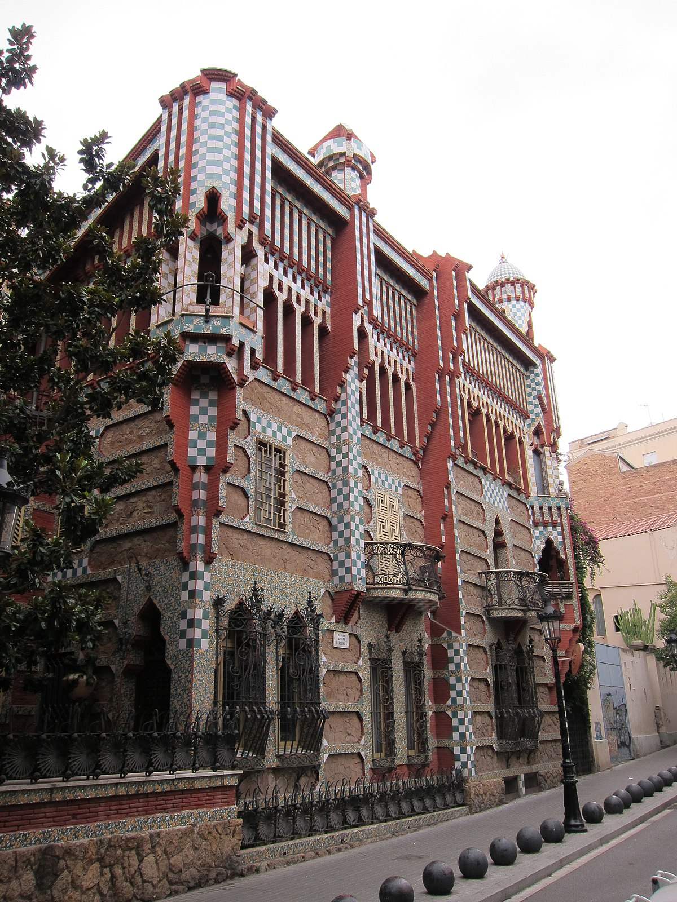

Raleigh Nonprofits & Homelessness Solutions in Raleigh, NC | Durham
2020.09.21 19:06
About CASA Our History Under Development Merritt Mill People We Serve Family Housing Veteran Housing Workforce Housing Model Housing For Those Living With Disabilities Workforce Housing Board of Directors Our Staff Contact Us Our Impact COVID-19 Response CASA’s Housing Solution Fund Blog 2019 Annual Report CASA Partner of the Month Get Involved Monthly Giving Ways to Support CASA Volunteer Opportunities Careers with CASA Community-Related FAQ Planned Giving 2020 Fall Fundraiser LIVE WITH CASA Current Residents Prospective Residents DONATE Select Page
Thursday, September 24th
Buy a Ticket TodayThe solution to homelessness is housing
Donate TodayWe’re building in Orange County!
Learn About our Merritt Mill DevelopmentLearn about living with CASA
Sign up for UpdatesCome to our virtual event!
Buy a Ticket TodayThe solution to homelessness is housing
Donate TodayWe’re building in Orange County!
Learn About our Merritt Mill DevelopmentLearn about living with CASA
Sign up for UpdatesOur Mission
To provide access to stable, affordable housing for people who are homeless or at risk by developing and managing rental communities.
Learn More »
The Solution to Homelessness is Housing.
Support the Mission
Meet Our Tenants
Meet Our Other Tenants
CASA is a 501(c)3 nonprofit organization that serves Raleigh, Durham, Chapel Hill, and surrounding North Carolina areas by providing and managing affordable housing for underserved, disabled, and homeless veterans and individuals in the community. With your help , CASA can continue solving homelessness in the Triangle and creating more opportunities for successful living by providing those in need a vital resource: a home.
Diversity makes us stronger as an organization. As part of our commitment to equality for all, we welcome all races, religions, ethnicities, countries of origin, sexual orientations, gender identities, and abilities.
Support Casa
Does your group or corporation support non-profits? Are you looking to volunteer or advocate for CASA ? Visit our Support CASA page to learn how you can help, or simply Donate Now online. Thank you!
Support CASA Donate NowCASA is a 501(c)3 nonprofit organization.
OUR MONTHLY E-NEWSLETTER
To receive volunteer, event, and good news updates, please sign up for our monthly e-newsletter.
CONTACT US
919-754-9960
casahousing@casanc.org
Office Hours: 8:30am-5:00pm
624 W Jones St.
Raleigh, NC 27603
More Contacts & Map »
Website Managed by Reunion Marketing
Designed by Elegant Themes | Powered by WordPress
- Cat mai costa sa construiesti o casa in acest an – Idei case
- Acasa - Luxor.Casa
- Casa Parfumurilor
- Casa Mea Ep 13 Online Subtitrat - Dogdugun Ev Kaderindir ...
- Case/Vile de vânzare în Braşov - Imobiliare.ro
- The Prince Of Wales's House - Accommodation & English Courses
- Casa de Asigurări de Sănătate a Municipiului București
- CASA
- Casa Trappold, Apold – Prețuri actualizate 2020
- CASA SOARELUI MURIGHIOL - Casa de vacanta in MURIGHIOL, TULCEA
- Cat mai costa sa construiesti o casa in acest an – Idei case
Imobiliare.ro este portalul în care vei găsi cele mai multe anunţuri imobiliare din Braşov, venite atât de la agenţiile imobiliare, dezvoltatori, dar şi de la particulari care preferă să îşi vândă singuri locuinţa. Ai acces la un număr impresionant de case vile de vânzare, actualizate în timp real.Găseşti atât case vile de vânzare în Braşov, cât şi case vile de ...
- Acasa - Luxor.Casa
informații pentru asigurați. date de contact casmb ***** *** transmite online *** ***** cereri/petiȚii ***** ***** verificĂ existenȚa cardului naȚional la casmb
- Casa Parfumurilor
Casa Moritz a fost construita in anul 1917 ,in stil Art Deco de catre Eduard Moritz, proprietar al Curtii de Fier Brasov in aceea perioada .Dupa 100 aceasta intra intr-o reparatie capitala si devine ceea ce este acum,pastrand frumusetea detaliilor acelei perioade atat la interior cat si la exterior.
- Casa Mea Ep 13 Online Subtitrat - Dogdugun Ev Kaderindir ...
Bun venit la Casa Razeșului! Facilitățile oferite de noi. Ultra ALLINCLUSIVE. 11 Camere disponibile. Mancare Traditionala. Calatorii in Muntii Calimani. Bar Traditional. Jacuzi in aer liber . Piscina . Restaurantul nostru. Mâncare Tradițională și un ambient plăcut.
- Case/Vile de vânzare în Braşov - Imobiliare.ro
Casa Mea Ep 13 Online Subtitrat. Urmareste aici ultimele episoade online din serialul turcesc Casa Mea / Dogdugun Ev Kaderindir ️ Casa Mea Ep 13 Online Subtitrat Acest episod este difuzat cu traducere in limba romana
- The Prince Of Wales's House - Accommodation & English Courses
Casa. All Products (445) 3,6,9 lei HP (5) ALTE CHESTII - Uite ce-i nou in magazin (33) Black Friday 2017 dama minis 20 (1) Black Friday 2017 dama minis 50 (5) Black Friday 2017 minis altele 50 (4) Black Friday 2017 minis altele 80 (2) Black Friday 2017 minis (13) Colectie Noua (6) casa-si-gradina (238) colectie-femei-barbati (375) black-friday ...
- Casa de Asigurări de Sănătate a Municipiului București
Casa Trappold se află în Apold și are un restaurant, un bar, un lounge comun și o grădină. Facilitățile oferite de proprietate includ o recepție deschisă nonstop, o bucătărie comună și WiFi gratuit în toate zonele sale.
- CASA
Casa Parfumurilor acopera multiple segmente de parfum ambiental: casă, maşină, birou, clădiri. Oferim servicii de Aroma Marketing si creare de Parfum
- Casa Trappold, Apold – Prețuri actualizate 2020
Donate & Support Texas CASA. A donation to Texas CASA is an investment in Texas’ future. With your gift to Texas CASA, you can help the CASA program(s) both in your community AND around the state to provide the very best volunteer advocacy for children and families involved in the child welfare system.
- CASA SOARELUI MURIGHIOL - Casa de vacanta in MURIGHIOL, TULCEA
Luxor Casa ofera mobila de calitate premium, accesorii de design interior si corpuri de iluminat. Viziteaza magazinul online sau showroom-ul din Ploiesti.
Imobiliare.ro este portalul în care vei găsi cele mai multe anunţuri imobiliare din Braşov, venite atât de la agenţiile imobiliare, dezvoltatori, dar şi de la particulari care preferă să îşi vândă singuri locuinţa. Ai acces la un număr impresionant de case vile de vânzare, actualizate în timp real.Găseşti atât case vile de vânzare în Braşov, cât şi case vile de ...
informații pentru asigurați. date de contact casmb ***** *** transmite online *** ***** cereri/petiȚii ***** ***** verificĂ existenȚa cardului naȚional la casmb
Casa Moritz a fost construita in anul 1917 ,in stil Art Deco de catre Eduard Moritz, proprietar al Curtii de Fier Brasov in aceea perioada .Dupa 100 aceasta intra intr-o reparatie capitala si devine ceea ce este acum,pastrand frumusetea detaliilor acelei perioade atat la interior cat si la exterior.
Bun venit la Casa Razeșului! Facilitățile oferite de noi. Ultra ALLINCLUSIVE. 11 Camere disponibile. Mancare Traditionala. Calatorii in Muntii Calimani. Bar Traditional. Jacuzi in aer liber . Piscina . Restaurantul nostru. Mâncare Tradițională și un ambient plăcut.
Casa Mea Ep 13 Online Subtitrat. Urmareste aici ultimele episoade online din serialul turcesc Casa Mea / Dogdugun Ev Kaderindir ️ Casa Mea Ep 13 Online Subtitrat Acest episod este difuzat cu traducere in limba romana
Casa. All Products (445) 3,6,9 lei HP (5) ALTE CHESTII - Uite ce-i nou in magazin (33) Black Friday 2017 dama minis 20 (1) Black Friday 2017 dama minis 50 (5) Black Friday 2017 minis altele 50 (4) Black Friday 2017 minis altele 80 (2) Black Friday 2017 minis (13) Colectie Noua (6) casa-si-gradina (238) colectie-femei-barbati (375) black-friday ...
Casa Trappold se află în Apold și are un restaurant, un bar, un lounge comun și o grădină. Facilitățile oferite de proprietate includ o recepție deschisă nonstop, o bucătărie comună și WiFi gratuit în toate zonele sale.
Casa Parfumurilor acopera multiple segmente de parfum ambiental: casă, maşină, birou, clădiri. Oferim servicii de Aroma Marketing si creare de Parfum
Donate & Support Texas CASA. A donation to Texas CASA is an investment in Texas’ future. With your gift to Texas CASA, you can help the CASA program(s) both in your community AND around the state to provide the very best volunteer advocacy for children and families involved in the child welfare system.
Luxor Casa ofera mobila de calitate premium, accesorii de design interior si corpuri de iluminat. Viziteaza magazinul online sau showroom-ul din Ploiesti.
  